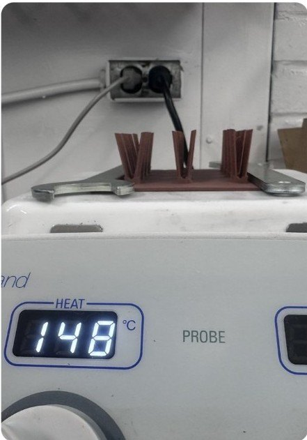
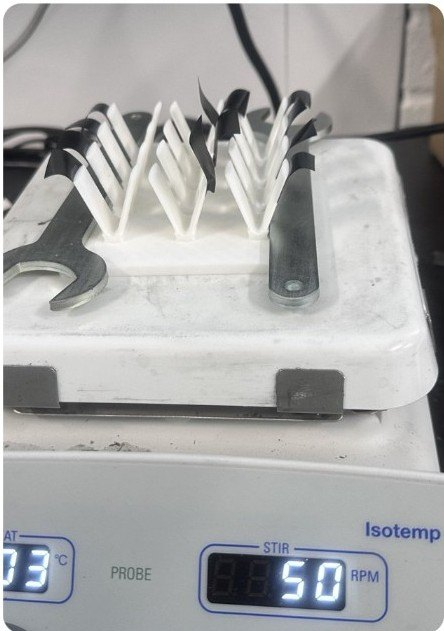
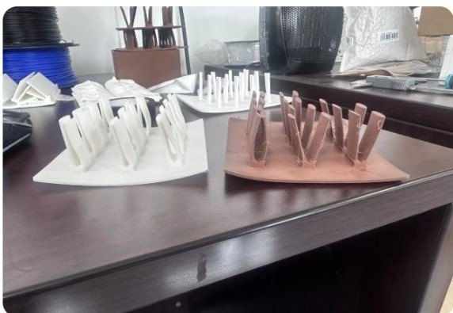

Project 3 · Current work
Copper-Infill PLA Heat Sink
Additive Manufacturing & 4D Printing Lab · Dr. Yiwei Han
Outcome
I designed a copper-infill PLA heat sink in SolidWorks, printed it by FDM and bench-tested it against regular PLA: 63% better heat dissipation and 34% more fin surface area. It is also a 4D-printed part that recovered 95% of its shape after being heated, bent and reheated.
Skills
- SolidWorks parametric design (9 iterations)
- SolidWorks Simulation FEA (13 studies, within 13% of test)
- FDM printing (9 prototypes)
- MATLAB data analysis (200+ points)
Details
| Fins tried | Straight plates, angled teardrops, round pins |
| Test setup | Fisherbrand Isotemp hot plate |
What went wrong: heating in hot water warped the fins, so I switched to a hot plate, which kept the shape much better.



